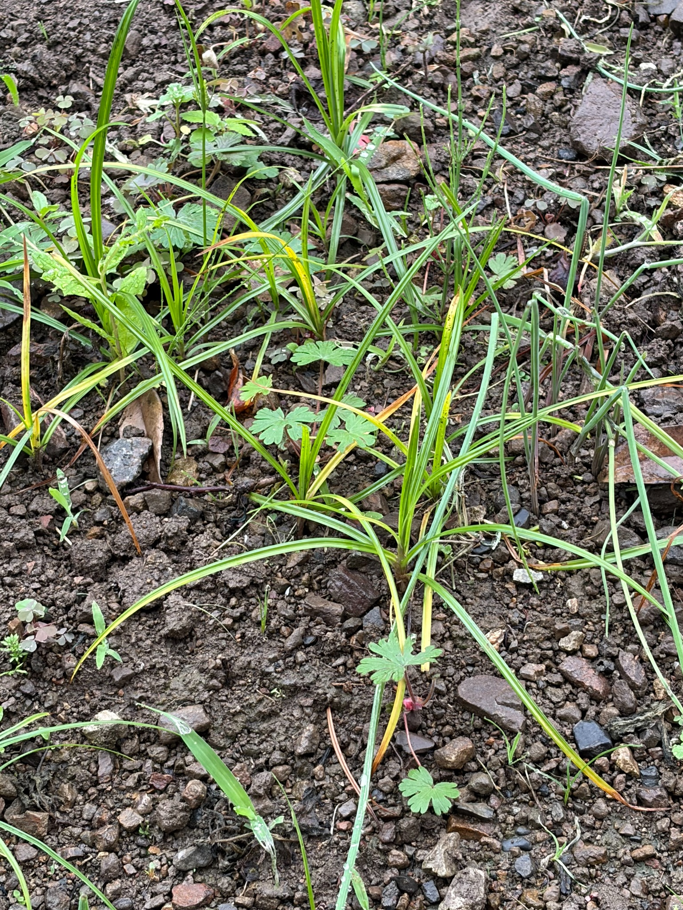
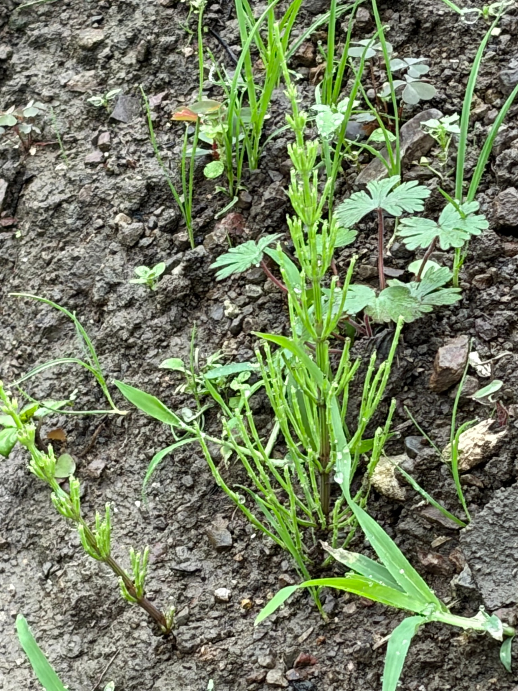
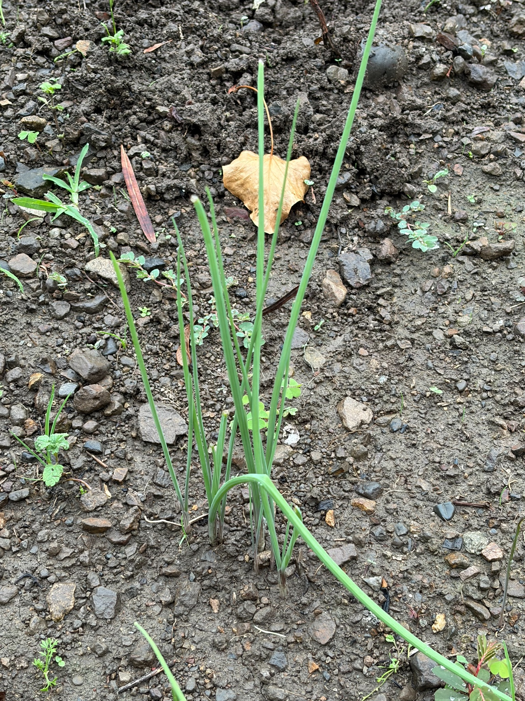

草を刈って、土を育てる
草は全部抜くべき？ 根を残して刈るという選択肢
草の管理では、必ずしもすべてを根から抜く必要はありません。根を土に残し、地上部を刈りながら管理する方法も、土づくりの選択肢です。立ったまま使える長柄の鎌は、このような管理にも使えます。
根を残すと、土にどんな利点がある？
根は土を支え、土壌中の微生物の活動にも関わっています。枯れた根は分解されて土の有機物になります。また、根を掘り起こす作業を減らすことで、土の構造を壊す機会も減らせます。効果は土の状態や管理方法によって異なり、根を残すだけですぐによい土になるという意味ではありません。
「根を残す」と「草を放置する」は別です。
作物に必要な光・水・養分を奪わないように、草丈や再生の様子を見ながら刈り、種をつける前に管理します。
一年草は、種を増やさず刈って管理する
一年草は、根を残して刈る方法を検討できます。ただし、一度刈っただけで枯れるとは限りません。再生した草が花や種をつけないように確認し、必要に応じて繰り返し刈ります。作物のすぐそばなど、競合を避けたい場所では抜き取りも選択肢です。
地下茎・球根などで増える草は、地下部分にも注意
地下茎・球根・塊茎などから増える草を減らしたい場合は、地上部を刈るだけでなく、再生・増殖する地下部分を取り除く方法も検討します。ここで大切なのは、単に細い根を抜くことではなく、その草がどの部分から増えるかを知ることです。地下部分が残れば再生する種類があり、一度の抜き取りで取り切れるとは限りません。
ハマスゲ・スギナ・ノビルなどは、除草剤による防除も検討
ハマスゲやスギナ、ノビルなど、地下茎・塊茎・球根が残ると再生する草は、刈り取りや抜き取りだけでは減らしにくい場合があります。使用場所や対象雑草に適した製品を選び、根や地下部分まで作用するグリホサート系除草剤による防除も選択肢として検討しましょう。効き方は草の種類、生育状態、製品、処理時期によって異なり、一度で完全に除去できるとは限りません。
茎葉に散布する製品は、生育中の葉から薬剤を吸収させて使います。散布前後の草刈りのタイミングも製品の説明に従ってください。使用できる作物・場所、対象雑草、希釈倍率、使用量・回数をラベルで確認し、残したい草や野菜・果樹に薬液がかからないようにします。

ハマスゲ

スギナ

ノビル
広告｜ラウンドアップマックスロード 500ml。価格・送料・在庫と商品の有効期限は販売サイトでご確認ください。
広告｜サンフーロン 500mL。使用条件は製品のラベルでご確認ください。
参考：ラウンドアップ公式：雑草の枯らし方。特定製品の説明をすべてのグリホサート系製品に当てはめず、使用する製品のラベルに従ってください。
それ以外の多年草も、草の種類に合わせて判断する
地下茎や球根がなくても、根や株元から再生する多年草があります。そのため「地下茎・球根のある草だけ抜き、それ以外の多年草はすべて残す」と一律には分けられません。刈り取りで管理でき、作物の生育を妨げない草は根を残す選択肢がありますが、強く再生して競合する草は除去も検討します。
道具選びの目安：根を残して管理するなら草を切る長柄の鎌、取り除きたい草には草取り道具。土づくりと雑草管理の両方を考えて使い分けましょう。
参考資料：ミネソタ大学：根と土壌への効果、
同大学：耕す回数を減らす庭の管理、
同大学：家庭菜園の雑草管理、
メリーランド大学：多年草の再生する部分（英語）。植物・土壌の一般的な性質を参考にした説明です。根の利点に関する資料は牧草等を対象としており、すべての雑草を残すことを推奨するものではありません。追記日：2026年10月4日